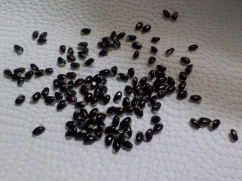
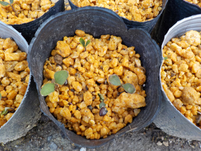
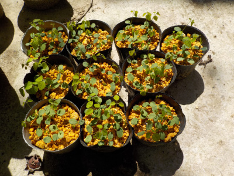
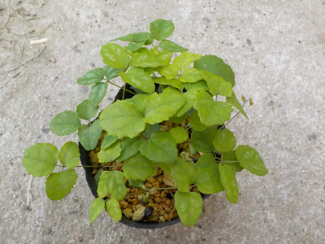
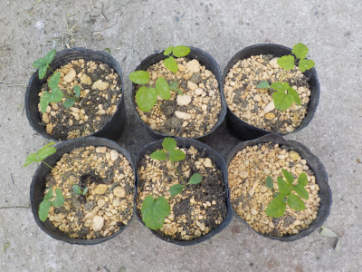
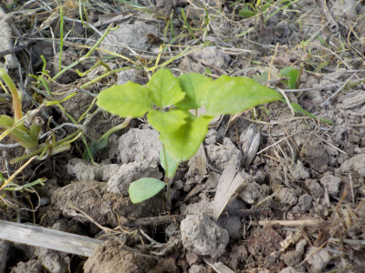
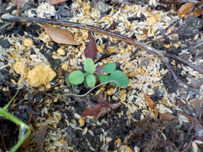
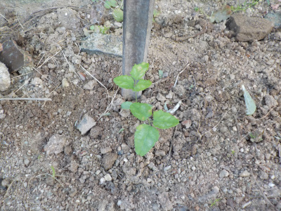
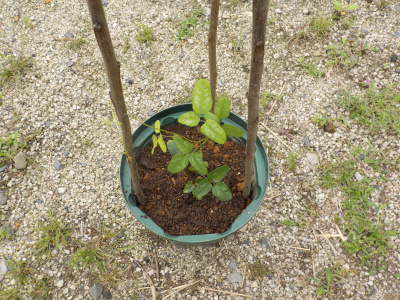
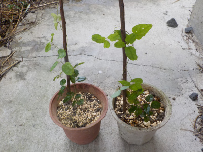

遊びで植物を育てよう
山でアケビを見つけたので、持って帰って育てることにしました。
更新日 : 2022/09/06
2021/10/10
山でアケビの種を採りました。

鳶ケ巣城址に登ったときにアケビの実をみつけました。
中の種を持って帰って洗ったところです。
春になったら種蒔きしようと思っています。
2022/03/06
アケビのタネをまきました。

山で拾ったアケビのタネをまきました。
1つのポットに10個くらい種をまきました。全部で100個くらいです。大量です。
すでにほとんどのタネから根っこが出ているので、大量に発芽するんじゃないかと思っています。
2022/03/27
アケビが発芽中です。

一つのポットから4つくらい発芽しています。
この発芽した苗はどう育てたらいいんだろう？
小さい鉢に1本づつ植えるのがいいのかな？
2022/04/17
アケビが大量に発芽しました。

早いうちに小分けした方がいいとは思いますが、面倒なのでとりあえず放置します。
ゴールデンウィークに何をするか考えようと思います。
2022/05/22
アケビ苗の一部を植え替えしました。

苗が茂りましたね。

よく成長した6本をポットに植え替えしました。
根っこが絡み合っていなかったので、簡単に分けて植えれました。

余った苗を捨てるのがもったいなかったので地植えしました。
茂ったポットがあと9個あるので、たぶんあちこちに地植えするんじゃないかと思います。
2022/06/04
アケビをツツジの茂みに植えました。

前回お同様に大きな苗はポットに植えて、余った苗を地植えしました。
今回はツツジの茂みの中です。大きく育ったら邪魔になるかもしれません。
2022/06/19
アケビを家の裏に植えてみました。

ネットでアケビの植える場所を調べると、日当たりの良い場所とよくあるんですが、山のアケビはそんなに日が当っていない気がするんですよね。
家の北側でも育つんじゃないかと思い植えてみました。苗が沢山あるので実験してみます。
2022/08/20
アケビを1本スリット鉢に植えました。

ポットで育てていたアケビのツルが伸びて、何かに巻きたそうになったので鉢を大きくしました。
木の枝を立てたので、これに巻きついて育つでしょう。
2022/09/06
ポットのアケビを2本、小さな鉢に植え替えしました。

またポットのアケビを植え替えしました。
アケビの苗はまだ沢山あるけど、後何個育てたらいいんだろう。
アケビの記事をまとめたものはこちら
TOP > 果物 > アケビ
【おいしいものを食べよう。】【しっかり寝よう。】
【ソロ活をしよう!】【季節感のあることをしよう。】【動画視聴はほどほどに。】【当サイトの全てのコンテンツは無断転載禁止です。】